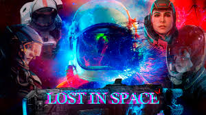

Lost in Space est une série de science-fiction qui suit la famille Robinson, envoyée dans l'espace
pour établir une colonie humaine sur une planète lointaine.
Cependant, leur mission tourne mal lorsque leur vaisseau, le Resolution, se crashe sur une planète
inconnue.
La famille doit alors survivre dans un environnement hostile tout en faisant face à des dangers
imprévus, dont des créatures extraterrestres et des défaillances technologiques.
Au cœur de l'histoire se trouve le personnage du Dr. Smith, un usurpateur manipulatif qui met en péril
la sécurité du groupe.
La série explore des thèmes de survie, de famille et d'adrénaline, tout en développant les relations
entre les membres des Robinson, leur évolution personnelle, et leur lutte pour échapper à leur situation
précaire.
Lost in Space combine action, suspense et moments poignants pour offrir un récit captivant sur la
conquête de l'inconnu.